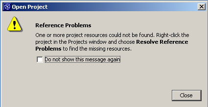
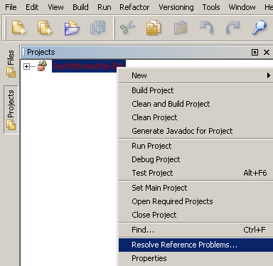
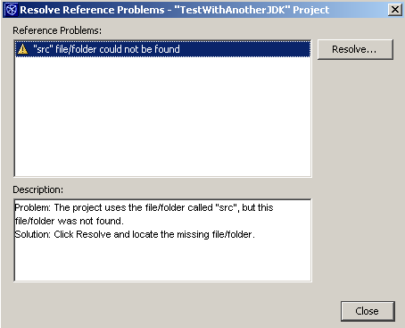

If NetBeans identifies an Eclipse project reference problem while processing an Eclipse project, a warning dialog will be displayed informing the user NetBeans has found an Eclipse Project Reference problem along with the corrective action. An example of the warning dialog is shown below.

To resolve Eclipse project reference problems, go to the NetBeans Project window, right click the project just imported and select Resolve Reference Problems as shown below.

After selecting the Resolve Reference Problems, a Resolve Reference Problems wizard is displayed which identifies what NetBeans has found for Eclipse project reference problems. An example of this wizard is shown below.

The NetBeans Resolve Reference Problems wizard describes the Eclipse project reference problems NetBeans has found with the Eclipse project along with a suggested solution. To resolve the Eclipse project reference problem, you simply press the Resolve button.
That's all there is to it! Although the NetBeans Eclipse Project Importer cannot automatically resolve all problems it has found with Eclipse projects, it does give you suggested solutions as to how to resolve the Eclipse project reference problems it has found.